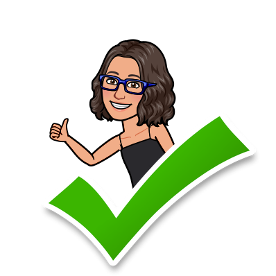
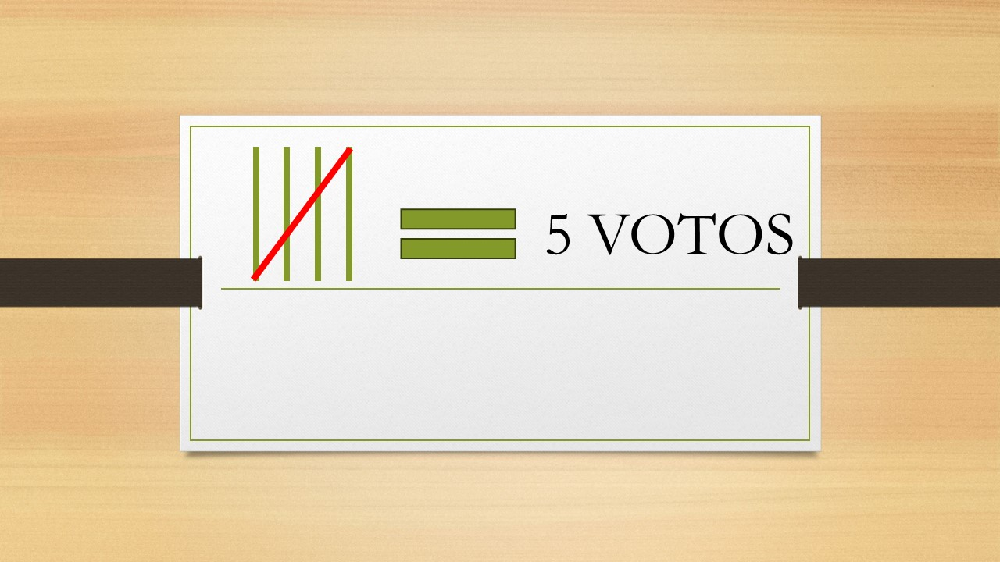
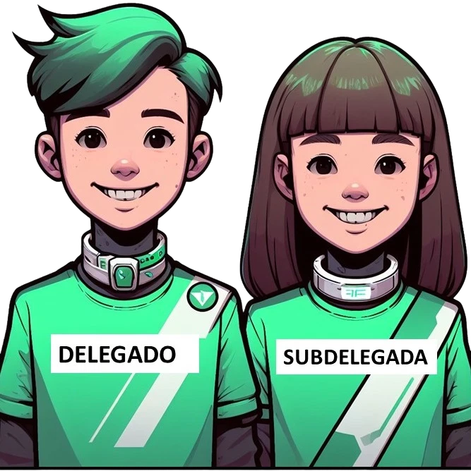

A. La votación. La hora de la verdad

Bueno chicos, ya habéis hecho vuestros programas electorales, carteles, discursos y debates. Habéis elaborado el censo, la lista y la papeleta electoral. Se ha constituido la mesa electoral y elaborado el acta. Ahora llega la hora de la verdad, ¡toca votar!.
Elaboramos nuestro D.N.I.
Para poder votar necesitas tener un Documento Nacional de Identidad o D.N.I. Vamos a elaborar nuestro propio D.N.I que solo servirá para nuestra votación en clase. Para unas elecciones municipales o nacionales necesitas tener más de 18 años y tener un DNI auténtico obtenido en una comisaría de Policía Nacional.
1. Cada alumno marcará en la papeleta electoral un máximo de tres candidatos. El voto es secreto por lo que se podrá utilizar la cabina de votación para preservar la intimidad.
2. Tendrás que ir a la mesa electoral y hacer la cola.
3. Presentarás tu DNI al presidente de la mesa que comprobará tu identidad y destapará la urna para que eches el voto.
Los miembros de la mesa serán los últimos en votar.
Lectura facilitada
Ahora, llega el momento de votar
1.Elaboramos nuestro DNI
2.Marcamos en la papeleta 3 candidatos máximo
3.Vamos a la mesa electoral con DNI y papeleta
4. Presentamos DNI y echamos papeleta
Los miembros de la mesa votan los últimos
B. El escrutinio
¡A contar!
Busca en Gooly el significado de la palabra "escrutinio", resume la información y una vez que la hayas contrastado con tu maestro , anótala en tu diario de aprendizaje.

Una vez finalizada la votación, llega el momento de llevar a cabo el escrutinio, es decir, de contar los votos.
Para ello, tu maestro te facilitará una ficha con una tabla de conteo . Recuerda que para contar tienes que marcar una línea vertical por cada voto y una diagonal que sería el voto número cinco, tal y como muestra la imagen.

Cuando se hayan contabilizado los votos, llega el momento de sumar y obtener el total de votos de cada candidato. Finalmente, tendrás que ordenarlos en función del número de votos obtenidos.
Si se produce un empate, se volverá a votar siendo los únicos candidatos los que han empatado.
Una vez contabilizados los votos, el secretario de la mesa electoral tendrá que rellenar el acta de elección.
C. Los resultados. Diagramas o gráficos
¿Qué es un diagrama o gráfico?
Busca en Gooly el significado de "gráfico", resume la información y una vez que la hayas contrastado con tu maestro, anótala en tu diario de aprendizaje.
El diagrama de barras
Una vez que tenemos los resultados y conocemos a nuestro delegado y subdelegado, llega el momento de organizar los datos. Para ello, lo primero que vamos a hacer es un gráfico o diagrama de barras en el que reflejemos los votos obtenidos por cada candidato. En el siguiente vídeo podrás aprender más sobre los gráficos de barras. Escucha atentamente.
Elaboramos nuestro diagrama de barras
Ahora, teniendo en cuenta lo que se te ha explicado en el vídeo y con la información de tu tabla de conteo, vas a hacer un diagrama o gráfico de barras en tu libreta, posteriormente cuando corrijáis en clase dicho gráfico, tendrás que pasarlo a tu diario de aprendizaje.
El gráfico circular
¿Crees que se puede organizar la información de otra manera que no sea un gráfico de barras? Pues sí, se puede organizar de muchas maneras más. Vamos a aprender una más, el diagrama o gráfico circular.
Elaboramos nuestro gráfico circular
Ahora que conoces otra manera de organizar la información, elabora un gráfico circular, en tu diario de aprendizaje, con la información del gráfico de barras que elaboraste anteriormente.
¿Qué es un porcentaje?
Antes de continuar, tenemos que repasar el porcentaje o tanto por ciento. Presta atención al siguiente vídeo:
Porcentaje de votos de nuestros candidatos
¡Ahora te toca a ti! Teniendo en cuenta los datos de tu tabla de conteo, vas a averiguar qué porcentaje de votos ha obtenido cada uno de los candidatos o candidatas a las elecciones. Una vez que tengas los datos tendrás que representarlos en un gráfico circular. Primero hazlo en tu libreta a modo de borrador y una vez que compruebes que lo has hecho correctamente, pásalo a tu diario de aprendizaje.
D. La investidura.. ¡ Ya tenemos representantes !
¿Qué es una investidura?
Busca en Gooly el significado de la palabra "investidura", resume la información y , una vez que la hayas contrastado con tu maestro, anótala en tu diario de aprendizaje.
Acto de investidura de nuestro delegado y subdelegado.
Bueno chicos, después de tanto aprendizaje ya tenemos a nuestros flamantes ganadores y llega el momento de presentarlos como tal a la clase, es decir, realizar un acto de investidura en el que asumen sus nuevas responsabilidades y dan un pequeño discurso de agradecimiento.
Ahora, tienen un curso por delante para demostrar que no os habéis equivocado en vuestra elección y que son unos dignos representantes de la clase.
¡ Enhorabuena a los ganadores !.
